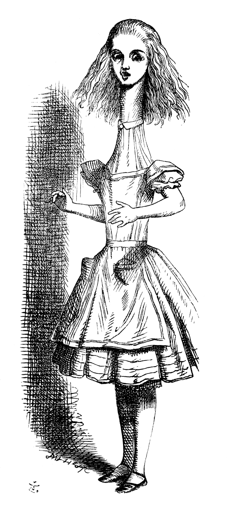

Ils formaient une assemblée bien grotesque ces êtres singuliers réunis sur le bord de la mare ; les uns avaient leurs plumes tout en désordre, les autres le poil plaqué contre le corps. Tous étaient trempés, de mauvaise humeur, et fort mal à l’aise.
« Comment faire pour nous sécher ? » ce fut la première question, cela va sans dire. Au bout de quelques instants, il sembla tout naturel à Alice de causer familièrement avec ces animaux, comme si elle les connaissait depuis son berceau. Elle eut même une longue discussion avec le Lory, qui, à la fin, lui fit la mine et lui dit d’un air boudeur : « Je suis plus âgé que vous, et je dois par conséquent en savoir plus long. » Alice ne voulut pas accepter cette conclusion avant de savoir l’âge du Lory, et comme celui-ci refusa tout net de le lui dire, cela mit un terme au débat.
Enfin la Souris, qui paraissait avoir un certain ascendant sur les autres, leur cria : « Asseyez-vous tous, et écoutez-moi ! Je vais bientôt vous faire sécher, je vous en réponds ! » Vite, tout le monde s’assit en rond autour de la Souris, sur qui Alice tenait les yeux fixés avec inquiétude, car elle se disait : « Je vais attraper un vilain rhume si je ne sèche pas bientôt. »
« Hum ! » fit la Souris d’un air d’importance ; « êtes-vous prêts ? Je ne sais rien de plus sec que ceci. Silence dans le cercle, je vous prie. « Guillaume le Conquérant, dont le pape avait embrassé le parti, soumit bientôt les Anglais, qui manquaient de chefs, et commençaient à s’accoutumer aux usurpations et aux conquêtes des étrangers. Edwin et Morcar, comtes de Mercie et de Northumbrie — » »
« Brrr, » fit le Lory, qui grelottait.
« Pardon, » demanda la Souris en fronçant le sourcil, mais fort poliment, « qu’avez-vous dit ? »
« Moi ! rien, » répliqua vivement le Lory.
« Ah ! je croyais, » dit la Souris. « Je continue. « Edwin et Morcar, comtes de Mercie et de Northumbrie, se déclarèrent en sa faveur, et Stigand, l’archevêque patriote de Cantorbery, trouva cela — » »
« Trouva quoi ? » dit le Canard.
« Il trouva cela, » répondit la Souris avec impatience. « Assurément vous savez ce que « cela » veut dire. »
« Je sais parfaitement ce que « cela » veut dire ; par exemple : quand moi j’ai trouvé cela bon ; « cela » veut dire un ver ou une grenouille, » ajouta le Canard. « Mais il s’agit de savoir ce que l’archevêque trouva. »

La Souris, sans prendre garde à cette question, se hâta de continuer. « « L’archevêque trouva cela de bonne politique d’aller avec Edgar Atheling à la rencontre de Guillaume, pour lui offrir la couronne. Guillaume, d’abord, fut bon prince ; mais l’insolence des vassaux normands — » Eh bien, comment cela va-t-il, mon enfant ? » ajouta-t-elle en se tournant vers Alice.
« Toujours aussi mouillée, » dit Alice tristement. « Je ne sèche que d’ennui. »
« Dans ce cas, » dit le Dodo avec emphase, se dressant sur ses pattes, « je propose l’ajournement, et l’adoption immédiate de mesures énergiques. »
« Parlez français, » dit l’Aiglon ; « je ne comprends pas la moitié de ces grands mots, et, qui plus est, je ne crois pas que vous les compreniez vous-même. » L’Aiglon baissa la tête pour cacher un sourire, et quelques-uns des autres oiseaux ricanèrent tout haut.